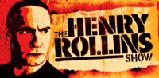
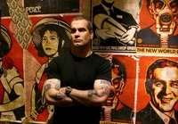

The Henry Rollins Show
From The Giant: The Definitive Obey Giant Site
From ObeyGiant.com:
|  |
|  |
{kind=link}
{kind=link}
The Henry Rollins Show kicks off this Saturday, April 1 on IFC (Independent Film Channel) @ 10pm EST/PST with 20 new weekly episodes and a brand new format. Henry’s show is THE alternative to wimpy late-night television. The premiere episode features guest Oliver Stone and an exclusive musical performance by Sleater-Kinney. The Henry Rollins Show features Shepard Fairey's artwork in both the show opening and on the set. Shepard also created and designed the marketing images for the show. Watch it every week only on IFC. Go to www.ifc.com for channel locater and some additional exclusive video footage. Visit the show's MySpace page at www.myspace.com/henryrollinsshow.
A review of the show from Pop Matters:
All Henry, All The Time
It's very, very hard not to pull for Henry Rollins, even if he has spent too much time on MTV and has a resume to make you sick with envy. Consider: kid from Washington D.C. fronts seminal '80s punk band Black Flag, while publishing essays and poetry that make up in astonishing honesty what they lack in subtlety. He has his own publishing outfit and music label, allowing him to release work by people he admires, everything from the gothic writings of Nick Cave to the free-jazz explosion that is Charles Gayle. Rollins reforms his band and releases an album when he feels like it, does spoken word tours around the world (including USO trips to Afghanistan and Iraq), and gets the occasional acting gig. Now Rollins has his own weekly TV show, where he gets to present his favorite filmmakers and musicians to the world. All in all, not a bad life.
The primary problem with The Henry Rollins Show, which premiered on IFC on 1 April, is not dissimilar from what mars Rollins' literary outfit: an invitingly frank approach dulled by a lack of self-editing. If one has to watch an evening talk show with guests and bands, this would likely be the one, but that's hardly a ringing endorsement.
In an earlier incarnation, Rollins' IFC show was a monthly affair called Henry's Film Corner. He hosted a nice list of fan favorites, from Philip Seymour Hoffman to Don Cheadle, and maintained an admirable irreverence (one episode featured Rob Zombie, Rollins, and his mailman talking about Kurosawa flicks). This time out, IFC is letting Rollins range around a little more, keeping the focus on film while adding non-film guests (Chuck D, for example) as well as bands (Jurassic 5, Death Cab for Cutie, Frank Black). The only uniting principle seems to be that Henry likes it.
What this means in practice is not only that Rollins is going to bring on the people he respects, but that he's also going to treat them accordingly. On The Henry Rollins Show, everyone can cuss, a small freedom that won't mean much to viewers, but seems to put the guests at ease. You can almost see them exhale, as though thinking, "Here I don't have to watch myself so closely." And the bands get to play complete versions of whatever songs they like, no snipping of extra choruses or lead-ins as is done on most time-conscious shows.
But still, the show is disappointing. Rollins has always had a penchant for preaching to the converted when he gets going on politics. This is perfectly illustrated in the unfortunately Dennis Miller-esque "Teeing Off" segment that opens the show. In the premiere episode, Rollins goes off on the usual suspects (Bush, Iraq War, Katrina, Bush, Bush). His delivery is fine: straight at the camera, buzz cut and heavily tattooed arms enhancing the immediacy of the message. But the material itself remains somewhat canned, no matter how honest the messenger. Similar problems afflict later segments in the show, including one where Rollins writes a letter to Laura Bush, commiserating with her on having an idiot for a husband -- edgier than Letterman, but just not funny. With no studio audience (choice or budget?) or even visible crew members to provide responses, the monologue feels flat. This may not even be Rollins' fault, as even the best comics need an audience; imagine Jon Stewart alone in the studio. Even though Rollins' writing in these segments is not terribly funny, an audience chuckle here and there might have saved it.
Failed comedy bits aside, when it comes down to the real substance of the program, The Henry Rollins Show really comes to life with its guests. The first episode featured the rarely interviewed Oliver Stone and then Sleater-Kinney. Rollins' interview approach is more Charlie Rose than Craig Ferguson: facing chairs, knowledge of the guest's work, and an off-the-cuff manner that lets the conversation flow naturally, not corralling it into the usual talking points. Stone talked for a few minutes about JFK and the upcoming World Trade Center, but once the subject turned to Nixon, the interview became a political discussion of escalating direness. Rollins said little except to agree as Stone wound himself up into increasingly wild flights of rhetoric, saying he'd watched America turn from the Roman Republic into the Roman Empire, and calling Bush a dictator. It was a remarkably paranoid stretch of television and quite unlike anything you'd see on the major networks. Unfortunately, Rollins ends it with a lame "I like all those things you just said," an Oprah-like I-really-wasn't-listening moment if there ever was one.
The musical segment sustained an energy that this discussion did not. Rollins has touted his show as a place where bands play the songs that they want, without changing any of the lyrics or trimming out intros or extra bridges in order to make room for the next commercial break. Sleater-Kinney rewarded this rare sort of respect by cranking themselves up and blowing all the air out of the studio, playing with a vibrant urgency.
Frustratingly, considering this is IFC, the single least effective element of the Rollins' first episode was its final and most film-centered segment: a farewell piece called "End Credits." Here he chose to highlight the films of Fassbinder and also Gus Van Sant's My Own Private Idaho, seemingly intending to remind those watching (who presumably already know this) that gay cinema exists outside of Brokeback Mountain. It's one thing to speak from the heart and not quite connect, as Rollins does many times on the show. It's quite another to be condescending.